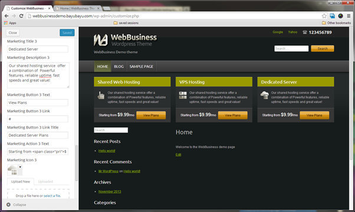

Overview
WebBusiness is a responsive multi-purpose WordPress corporate web theme. It is suitable for business site or even personal site. It has a fully responsive layout for desktop, tablet and smartphones in both portrait and landscape mode. It also contains a lot of SEO best practices.
This document covers how to install the theme and basic customization to get most out of your theme.
Installation - Top
The easiest way to install WordPress theme is by using theme uploader.
- Log in to the WordPress Administration Panels.
- Select the Appearance panel, then Themes.
- Select Add New.
- Select Upload Theme
- Upload webbusiness.zip at the folder.
The other method is by copying theme folder to WordPress theme folder. Copy and paste WebBusiness theme folder to WordPress wp-content/themes folder.
You can learn more about using theme at http://codex.wordpress.org/Using_Themes.
Once the theme has already uploaded/copied then it should be displayed in WordPress theme menu.
- Appearance >> Themes.
- Activate WebBusiness theme.
Setting Up Your Menu - Top
In WebBusiness, there are three menu locations:
- Main menu/navigation.
- Top menu, a secondary menu displayed at the top.
- Footer menu.
WebBusiness using Wordpress built in Menu feature (Appearance >> Menu). So you can create the menu and assign them in each location mentioned above. Top menu and footer menu setup are done via Customizer that will be covered in section Customizer.
Define Your Homepage and Blog Page - Top
WebBusiness has page template for the homepage, so you need to create your own homepage and assign homepage template to it. The steps are:
- Create a new page for homepage. In page attributes section, set template as "Homepage" from the drop down list.
- Create another page for blog index page. Leave the content empty and name it "Blog" (feel free to choose another title).
- Go to Settings >> Reading. Set front page displays as a
static page.
- Front page as Home.
- Posts page as Blog.
Customizer - Top
In WebBusiness, almost all customization are done via WordPress customizer.
A. ADD SITE LOGO
In Customizer (Appearence >> Customize), select logo section in left sidebar and upload your own logo.
The site header will be adjusting itself to the logo dimension. But for the best result, it's about 55px in height (this assuming is non-retina size. For retina just double it up into 110px). If you don't have logo image, you can set logo text there. By default, it uses your WordPress site title. You can set your favicon as well.
B. ADD RETINA LOGO
How to enable retina logo? You can upload retina logo at customizer. Due to current limitation, you need to make sure that:
- Retina logo is uploaded the same time with normal logo.
- Retina logo filename must follow this pattern [standardlogofilename]@2x.[extension]
For example, if your standard logo is logo.png, then your retina logo must be logo@2x.png
TROUBLESHOOTING FOR RETINA
Question:
I uploaded retina logo using the correct filename but it not works? How to solve it?
Answer:
Try to re-upload both normal logo and retina logo at Customizer. This probably because you upload normal logo at different date time. The reason is most WordPress setup divide uploads file based on month and year. Retina logo & normal logo must be located in the same location.
Question:
You have uploaded file with the same name before.
Answer:
Rename both. so you need to rename them, for example to logo-new.png and logo-new@2x.png
C. SETUP FOOTER AND COPYRIGHT
At footer section, you can:
- Set copyright text, footer menu and footer logo.
- Add footer menu. This menu will displayed after copyright which is usually a privacy policy. It can be a main menu if you just have a few pages. Footer menu can be create by using WordPress menu (Appearance >> Menu). It will then displayed in the Footer Menu dropdown.
For the footer logo, you can do the same step as adding the main logo, by uploading your own logo in Footer section. Recommended size for footer logo is about 27px in height (in non-retina size). You can add retina version of your footer logo the same way you add retina logo (see previous section).
D. TOP MENU
Select the top menu section. You can setup:
- Phone number.
- Top menu, usually a secondary menu. Create your new top menu in WordPress menu (Appearance >> Menu) and assigned it here.
- Hide social media icons.
- Hide RSS.
- Hide search box at header.
E. HOMEPAGE MARKETING/FEATURED BOX
Go to Homepage Marketing section where you can set:
- Marketing Title
- Marketing Description
- Marketing Button Text
- Marketing Button Link
- Marketing Button Link Title, for SEO
- Marketing Icon, recommended size 32x32, sample included (icon1,png, icon2.png, icon3.png)
- Marketing Action Text
If you don't want to display this marketing at homepage, then tick the "Hide Marketing Section".

F. BANNERS
Banners is displayed in homepage. You can put up to 6 banners here. Go to Banners section where you can set:
- Banner Image.
- Banner Link, set it if you want a link.
- Banner Description, for SEO alternate image and link title.
You can also set:
- Hide Banners Section, to hide banner at homepage.
- Banner Delay, in millisecond (1 second = 1000 milliseconds).
- Banner Effects.
Tips on banner:
Make sure all your banner images are in consistent dimension or aspect ratio, for better result. It will scale responsively.

G. SOCIAL MEDIA
You can add social media at social media section. Social media icon will appear at top right of the website. If you want to hide social media section, tick hide social media at Top Menu section. And if you don't want RSS button to appear, tick hide RSS at Top Menu section.
H. COLORS
There are a lot of color customization in color sections. But you can choose from 6 pre-defined colors as your base of your further customization.
Pre-defined colors are : Default, Brown, Green, Red, Monochrome, Cyan.
|
Default |
Brown |
Green |
|
Red |
Monochrome |
Cyan |
Widgets - Top
A. SOCIAL MEDIA WIDGET
There is a social media widget in this theme, you just simply assign it to the sidebar region. For example if you want to place the widget at Footer Sidebar Column 3 then you just need to move the social media widget to Footer Sidebar Column 3 region.
B. SET HOMEPAGE WIDGET SIDEBAR
At homepage, there is an additional sidebar named Homepage Sidebar where you can assign widgets. There is also an additional widget area below content named Homepage Bottom. For best result you can install additional plugin to give a style for each widget. I recommend ZigWidgetClass plugin. If you don't have it, install it from plugin menu. There are three available colors to style the widget. If you want to set widget style, do the following steps:
- Go to Appearance >> Widgets.
- Assign to Homepage Sidebar.
- Set CSS class to "with-color color1" or "with-color color2" or "with-color color3" to get 3 different alternate colors, depend or your customizer theme (see the screenshot). It will add 2 additional classes to the widget, that is with-color and color1; or with-color and color2; or with-color and color3.
- Assign widget to the Homepage Bottom. For example, we create featured testimonial content titled "What others say about us?" set with color2 by "with-color color2".
C. SET ABOVE FOOTER WIDGET
Usually this is good for displaying your featured clients logo or perhaps technology. In this example we will display technology used in web hosting. I recommend Black Studio TinyMCE widget plugin for easier widget editing.
After installing the plugin, you can find widget named visual Editor. assign it into above footer region. Create a simple unordered list (using ul li).
Example:
<ul> <li> <img class="alignnone size-full wp-image-28" src="http://webbusinessdemo.bayubayu.com/wp-content/uploads/sites/2/2014/04/mysql.png" alt="MySQL" width="47" height="32" /> </li> <li> <img class="alignnone size-full wp-image-29" src="http://webbusinessdemo.bayubayu.com/wp-content/uploads/sites/2/2014/04/wordpress.png" alt="WordPress" width="100" height="32" /> </li> <li> <img class="alignnone size-full wp-image-30" src="http://webbusinessdemo.bayubayu.com/wp-content/uploads/sites/2/2014/04/postgreesql.png" alt="PostgreeSQL" width="110" height="32" /> </li> <li> <img class="alignnone size-full wp-image-31" src="http://webbusinessdemo.bayubayu.com/wp-content/uploads/sites/2/2014/04/php.png" alt="PHP" width="46" height="32" /> </li> <li> <img class="alignnone size-full wp-image-32" src="http://webbusinessdemo.bayubayu.com/wp-content/uploads/sites/2/2014/04/joomla.png" alt="Joomla" width="96" height="32" /> </li> <li> <img class="alignnone size-full wp-image-33" src="http://webbusinessdemo.bayubayu.com/wp-content/uploads/sites/2/2014/04/apache.png" alt="Apache" width="110" height="32" /> </li> <li> <img class="alignnone size-full wp-image-34" src="http://webbusinessdemo.bayubayu.com/wp-content/uploads/sites/2/2014/04/drupal.png" alt="Drupal" width="76" height="32" /> </li> </ul>
D. SET FOOTER WIDGET
This theme has 5 columns footer widget, you can assign each widget. Column 4 has slightly different style compared to the other columns.
E. DISPLAYING WIDGET.
If you want to display widget at homepage only or hide some widget at certain pages, use plugin. In this demo, we use Display Widgets
Another Customization - Top
A. SET RIGHT SIDEBAR.
By default, sidebar is on the left, if you want to set it at right, at Theme >> Customize
Sidebar Section >> Sidebar Position.
B. HIDE CATEGORY BLOG.
Assuming you've already install Display Widget plugin,You can hide category blog at front page by setting the categories sidebar widget.
C. CREATE FORM WITH CONTACT FORM 7 PLUGIN.
After you installed Contact Form 7 plugin, go to Contact, then Add New. There is two options to set the contact form, that is Form Horizontal Demo and Form Standard Demo.
Form Horizontal demo:
<div class="form-container form-horizontal"> <p> <label>Your Name</label>[text* your-name] </p> <p> <label>Your Email (required)</label>[email* your-email] </p> <p><label>Combo box</label>[select country "Indonesia" "Singapore" "Malaysia"]</p> <p><label>Subject</label>[text your-subject] </p> <p><label>Checkboxes</label><span class="form-fields">[checkbox checkboxes "check1" "check2"]</span></p> <p><label>Radios</label><span class="form-fields">[radio radios "radio 1" "radio 2" "radio 3" "radio 4" "radio 5" "radio 6" "radio 7"]</span></p> <p><label>Your Message</label>[textarea your-message] </p> <p>[submit class:button]</p> </div>
Form standard demo:
<div class="form-container form-standard"> <p> <label>Your Name</label>[text* your-name] </p> <p> <label>Your Email (required)</label>[email* your-email] </p> <p><label>Combo box</label>[select country "Indonesia" "Singapore" "Malaysia"]</p> <p><label>Subject</label>[text your-subject] </p> <p><label>Checkboxes</label><span class="form-fields">[checkbox checkboxes "check1" "check2"]</span></p> <p><label>Radios</label><span class="form-fields">[radio radios "radio 1" "radio 2" "radio 3" "radio 4" "radio 5" "radio 6" "radio 7"]</span></p> <p><label>Your Message</label>[textarea your-message] </p> <p>[submit class:button]</p> </div>
D. FULL WIDTH PAGE.
You can set a full width page by setting it in Page Section >> Page Attribute >> Template >> Full Width.
You can see the result of full width page in website demo at "About" page.
E. ADD CONTENT ABOVE CONTENT.
If you want to add widget at the top of content, assign the widget you want to place at the top of your content at Appereance >> Widget >> Above Content.
If you choose this widget to appear at homepage, it will be displayed below Homepage Marketing/Featured Box. You can use it with Display Widget plugin combination.
Misc - Top
RECOMMENDED PLUGINS
Plugins that used in demo:
- Contact Form 7, free flexible contact form plugin that allow you create form with your own html markup.
- Display Widgets, Adds checkboxes to each widget to show or hide on site pages.
http://strategy11.com/display-widgets/
- Black Studio TinyMCE Widget. Adds a WYSIWYG widget based on the standard TinyMCE WordPress visual editor.
http://wordpress.org/extend/plugins/black-studio-tinymce-widget/
OTHER RECOMMENDED PLUGINS.
Responsive Lightbox by dFactory
https://wordpress.org/plugins/responsive-lightbox/
otherwise, your gallery will be displayed in Wordpress image
post. This plugin seems only compatible with modern browsers.
PHOTO CREDITS
Photo used in demo website are by:
- Greg-Shield
- Linh Nguyen
- Daniel Robert Dinu
- Romain Briaux
- Joeri Römer
- Noel Lopez
Thank you again for your purchase and feel free to contact myself with any questions regarding this template/theme.
Creator - BayuBayu